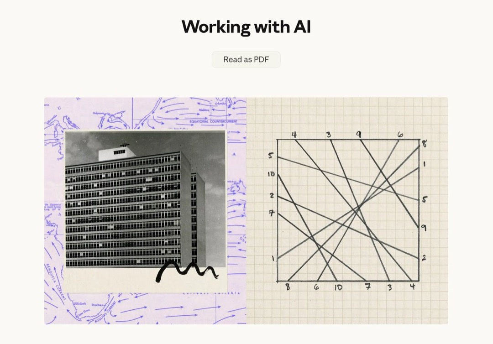
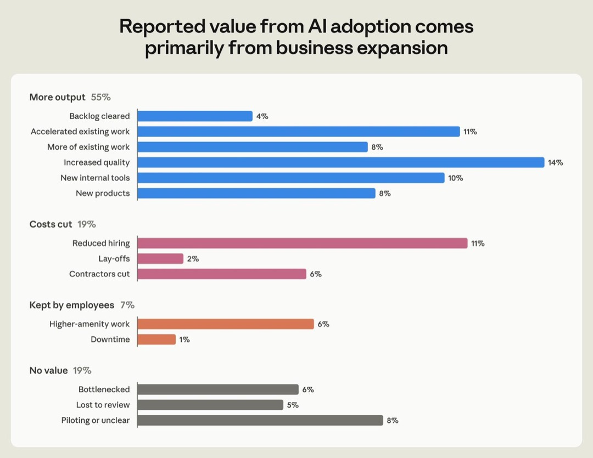
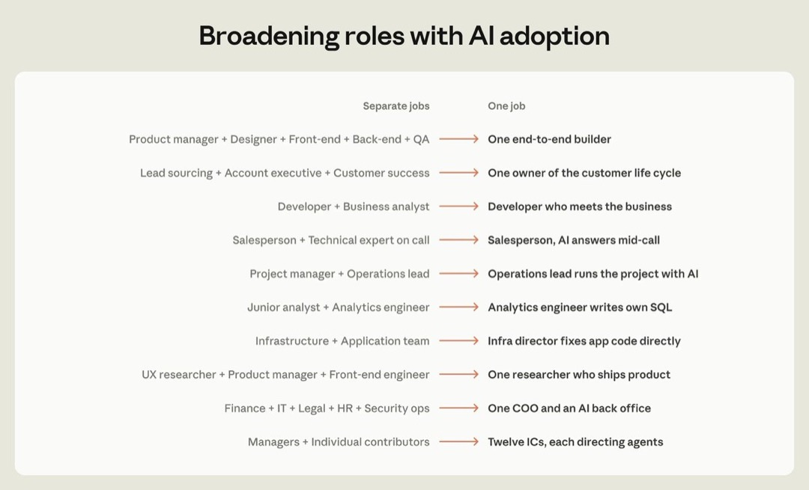
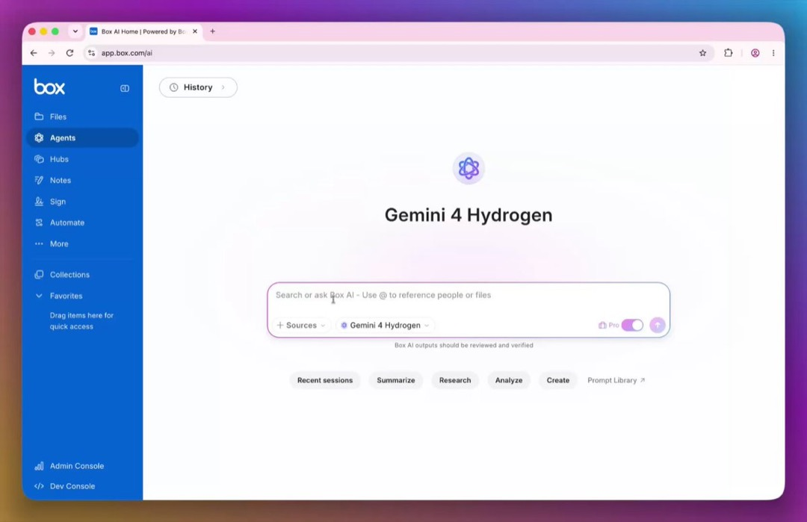

本期速览
01 Anthropic调研58家企业AI落地
02 Prompt驱动UX与动效优化
03 MCP改造先找场景再改接口
04 Uber把Skill当软件工程管理
05 Box AI核减48.6万变更请求
01｜Anthropic调研58家企业AI落地
来源（X） · @hungryturbo · 2026-11-24 19:47
没有空谈技术趋势，全程实打实地回答了大家最关心的几个问题，公司上 AI 到底赚到钱没？招人真的变少了吗？为什么很多团队用着用着就推不动了？
我把里面最有价值的 10 个发现和案例，整理了出来：
1、极少裁员，都在缩减招聘，砍掉外包。
58 家美国企业里，真正因为自动化直接裁撤本土正式岗位的只有 2 家，但 2/3 的公司缩减了招聘计划。某医疗公司高管直言：“我们在靠买 Token 扩充产能，而不是招人”。更有 AI 原生初创公司，把 90% 的运营预算花在买 Token 上，只留 10% 给人力成本。真正的重灾区是标准化外包，某金融公司，一口气砍掉了上百名海外数据处理与软件开发外包人员，另一家软件公司，找外部律所审合同的费用，也全都省掉了。
2、高回报靠增加产出，更靠重构流程。
随手用 AI 做几页 PPT，写写周报，在企业眼里的商业价值其实垫底。真正帮公司赚大钱的用法，都在创造业务增量，而且必须配合工作职责的重构，比如商业地产经理，直接用 AI 把空置商铺，渲染成潜在租客的品牌门店效果图，大幅提高签约率。市场部负责人也不再逐篇修改宣传物料，而是转向维护一份写满品牌规范的 skill.md 文件，供全员调用。
3、AI 省下的时间，员工悄悄拿去遛狗。
调研中约 10% 的 AI 提效红利，被员工个人悄悄截留了。有高管吐槽员工故意隐瞒 AI 提效的成果，把每周省出来的 10 个小时拿去遛狗，甚至有人被投资人怀疑每天只上半天班。背后的博弈很真实，某公司用 AI 让审批效率翻倍，并一口气砍掉 90% 的招聘名额，结果业务专家集体消极怠工。工作量翻倍却不涨工资，最后逼得公司只能发礼品卡，哄着大家多审单子。
4、强推自动化的结果，员工抵触，系统很快过时。
管理层自上而下强推自动化极易翻车，一方面，让业务专家帮 AI 调优工作流，等于让人亲手给自己钉棺材，加上部分公司用 AI 搞严密绩效监控，员工不得不费尽心思让自己的工作成果，讨好老板的考核 Agent。另一方面，花重金找外部供应商定制的固化系统，根本追不上底层模型的迭代速度，系统上线三个月就过时，沦为无人问津的僵尸应用。
5、外行零基础写软件，难在后期维护。
编程 Agent 最惊艳的爆发点，其实在非技术岗位，化工厂的质检主管，零基础写出了过滤率监控程序，会计把原本耗时 80 小时的养老金跨系统核对，做成了自动化工具。但热闹背后全是隐性维护成本，某大型律所算完账后，果断放弃自研招聘数据看板，为了省下每月几十美元的成熟 SaaS 订阅费，反而要搭进去专人长期维护代码，实在得不偿失。
6、局部提速太快，反而引发跨部门内耗。
单点环节效率狂飙，下游部门却接不住，只会引爆组织摩擦。某设备制造厂的工程师，用 AI 瞬间就把产品界面翻译成 10 国语言，结果，因为客服团队根本接不了外语电话，新功能还没上线就被迫关停。狂热用户们，动不动就向其他部门狂发长达 7 页的 AI 生成方案，逼得同事直接回怼，“别发了，我不看你的 AI 邮件！”更有高管犀利吐槽，“一个平庸的工程师配上 AI，简直是社会公害。”
7、合并岗位职能，彻底打破部门墙。
当内容和代码的生产速度暴涨，跨部门交接带来的上下文损耗，和开会扯皮就成了最大阻力。走在前面的企业，正在激进合并细分职能，有公司把产品经理、设计师、研发工程师、测试乃至基础架构合并进同一个全栈岗位。也有企业将线索挖掘、销售转化、客户成功三个岗位合三为一。正如一位技术负责人所说，“两个人加 Claude 就是最强形态，只要两个人达成共识，直接上线。”
8、离钱越近的工作，AI 模型越难胜任。
报告里有一句高管的金句，离钱越近的工作，模型越难做好。聪明的公司都在把员工往战略决策，产品审美与人际沟通这些瓶颈环节转移，某 CTO 直言 Claude 是个糟糕的产品经理，果断让产品经理把精力集中到打磨产品品味，和寻找市场契合度上。建筑公司的项目经理，让 AI Agent 每天早上自动催工地进度，汇总客户日报，自己腾出整个上午的时间，去跟客户深度沟通核心需求与服务体验。
9、AI 负责写初稿，新人跟着前辈练审稿。
很多行业的初级岗位，本质是新人的练级房，一家律所敏锐地发现，AI 接管法律文书初稿后，如果直接取消初级律师写文书的环节，未来就没人能分辨什么才是好文书。他们的解法非常值得借鉴，强制要求初级律师拿着 AI 生成的初稿，与资深律师结对协作，逐行批注修改。把人才培养模式，从低效的苦熬写初稿，直接升级为高密度的审稿判断力训练。
10、打通全员数据权限，守住安全底线。
想让 Agent 真正落地干活，前提是提供好业务上下文，并建好安全沙箱，毕竟数据安全高管警告，现在每个员工都是开发者，每天都在制造新的安全攻击面。一家卡车运输公司搭建好 Agent 可调用的数据仓库后，业务经理们像上瘾一样自己跑 SQL 查数据，彻底告别过去提个报表需求，动辄排队一两年的历史。AI 原生团队，则推行公开工作，把所有客户通话与会议录音实时转录到公共频道，沉淀成全员共享的数据活水池。






02｜Prompt驱动UX与动效优化
来源（X） · @Khazix0918 · 2026-11-24 14:12
1. 复杂应该留给我们系统，不要留给用户，用户体验至高无上。
按这条原则审查我们整个项目，同时也让Gemini当整个的方案、文案、交互顾问，重点看：
- 系统能判断的，不留给用户
- 此刻没用的，就不出现
- 能替人做的，就直接做
- 同一件事，处处一样
- 按下去有回应，再按能收回
- 不打断人手上的事
- 常用的好做，会丢东西的难误碰
- 界面自己说明自己
然后直接修好，修完亲手用一遍确认，再用GPT帮忙做一下审查。最后直接合并上线。
2. 把项目的动效整体做到苹果那种细腻、丝滑的水准。你自己审查整个项目，同时也让Gemini当整个的方案、文案、交互顾问，审完直接做。
怎么找：不要按部件去列，按"状态变化"去找。界面上任何东西的状态一变——出现、消失、移动、变大小、换内容、换图标、数值跳动、按下、悬停、加载、完成、出错——都问一句：这个变化用户看得懂吗？是突然跳过去的，还是有来有去、交代清楚了？顺着这个思路，大到页面切换，小到一个图标、一个数字、一个勾，都在范围里。
好动效的标准：
- 动效是在解释发生了什么：东西从哪来、到哪去、和什么有关，而不是装饰。
- 整个项目一套语言：同一类变化用同一种曲线和节奏，项目里已有的统一下来，不要每处自己发明。
- 克制：快、轻、不抢戏；用户反复做的操作要更快，宁可少动也不乱动。
- 跟手、可打断：拖动和调整大小时直接跟手，动画进行中再次操作也能自然接上。
- 不付性能代价：只动必要的东西，长内容里也要稳定满帧，自己量过再交付。
- 不引入新问题：不抖、不闪、不重排、不溢出，尊重系统的"减少动态效果"。
- 手机、窄窗口、宽屏、深浅色都要成立。
做完以后让GPT进行一下审查，最后直接合并上线。
03｜MCP改造先找场景再改接口
来源（X） · @HavenZhao · 2026-11-25 07:45
软件厂商忙着把产品改成MCP，企业也开始问：我们已经建好的系统，要不要都改一遍，让AI能调用？
改之前，值得先想清楚：MCP只是一个让AI能调用系统的接口，系统的功能本来就有，改完以后到底解决了什么问题？
这3种情况，值得做：
企业里有好几个系统，经常要跨系统查询和分析。比如一台设备的故障记录、维修工单、备件库存分散在三个系统里，原来要人工导出来对照，现在一句话就能问清楚。
有不少管理者和跨部门的人要看数据，但不熟悉系统，面对复杂的菜单和报表无从下手。
有大量重复的汇总、报告类工作，每天、每周都要从几个系统里拉数据、写总结。
这2种情况，意义就不大了：
只有一个系统，一线人员每天都在用，早就用得很熟练了。
说不出具体要用AI解决什么问题，只是为了"AI化"而改造。
先找到场景，再决定改哪些接口，比把所有功能都改成MCP更划算。
你们公司的系统，有在考虑改成MCP吗？
04｜Uber把Skill当软件工程管理
来源（X） · @davidd_ai · 2026-11-24 09:20
2025 年 10 月，Uber 内部只有 1 个 Skill。一年后，超过 5,000 个。单月调用超过 100 万次，数千名员工参与编写。
但这篇文章最有价值的不是规模，而是 Uber 已经开始像管理软件一样管理 Skills。
几个很有意思的细节：
1. 一个 Skill 就是一个标准化工作流。
可以是创建 PR、查询数据库、事故根因分析，也可以是销售团队的日常任务。
所有 Skills 存放在 Git 仓库里，有版本、Owner、Code Review 和测试。
分为三个等级：Domain、Core、Always-on。
其中大约 100 个通用 Skills 默认向所有员工开放。
2. 一套 Skills，同时支持多个 Agent。
Uber 做了一个叫 aifx 的 CLI。
Claude Code、Codex、OpenCode 以及内部 Agent，都可以使用同一套 Skills。
员工换 Agent，不需要重新配置工作流。
3. 他们真的在测试 Skill 有没有用。
Uber 会拿真实任务进行 A/B 式对照：同一个任务，分别让 Agent 使用和不使用 Skill，再盲测比较。
一个数据库查询 Skill 的实验发现：
不使用 Skill，工具调用增加 13%，工具错误达到 6 倍，执行时间增加 31%。
使用 Skill 的答案在 87% 的比较中获胜。
4. Skill 不是写得越长越好。
Uber 甚至会测试删除 Skill 的部分指令，观察效果有没有变好。
随着模型能力提升，一些原本有用的指令反而可能降低性能。
因此他们开始做 Skill Ablation：删掉一段指令，重新运行真实任务，看成功率、成本和延迟怎么变化。
5. 能用代码解决的，就不要浪费 LLM Token。
他们发现，100 多个 MCP Tools 的定义可能在任务开始前就占用 50,000–70,000 Tokens。
于是把确定性的工具调用封装成脚本，通过 Code Mode 执行，只把必要结果交回模型。
部分 Skill 优化后，单次执行成本降低了 32%–46%。
6. 最有意思的是，Agent 会自己报告 Bug。
当 Agent 遇到错误参数、过时文档、无限重试或者流程异常时，会自动提交一份叫 Papercut 的报告。
过去三个月，Agent 自己提交了数千份问题报告，数百个问题已经修复。
这些问题又被转化成新的测试用例。
整个系统形成一个循环：
执行任务 → 发现问题 → 提交报告 → 修复 Skill → 自动评估 → 发布新版本。
Uber 下一步还要做 Skill A/B Testing、按模型自动编译 Skill，以及自动将任务路由到合适的 Agent 和 Skills。
这篇文章透露出一个很重要的变化：
企业 AI Agent 的竞争，正在从谁的模型更聪明，转向谁能把企业知识、工具和工作流沉淀成一套可复用、可衡量、能持续进化的执行系统。
未来企业真正需要管理的，可能不是几千个 Prompt，而是几千条由 Agent 执行的业务工作流。
引用内容
Uber Engineering @UberEng
中文译文
原文
05｜Box AI核减48.6万变更请求
来源（X） · @Box · 2026-11-13 06:38
中文译文
我们让 @GoogleDeepMind 的 Gemini 4 Hydrogen 投入工作，审查 Box 中一份价值 486,000 美元的施工变更请求。
Gemini 识别出一笔已经支付过的起重机费用，并根据已签署的合同条款和项目记录将该请求对账至 330,000 美元。它还标记出一项缺乏支持证据的工期延长申请。Box AI 保存了一份带有来源引用的建议，供项目业主审核。
客户可以通过 Box AI Studio 为自己的文档密集型工作流构建自定义代理。
原文
We put Gemini 4 Hydrogen from @GoogleDeepMind to work reviewing a $486,000 construction change request in Box.
Gemini identifies a crane charge that was already paid and reconciles the request to $330,000 using the signed terms and project records. It also flags a time extension that lacks supporting evidence. Box AI saves a source-cited recommendation for the project owner’s review.
Customers can build custom agents for their own document-heavy workflows with Box AI Studio.
